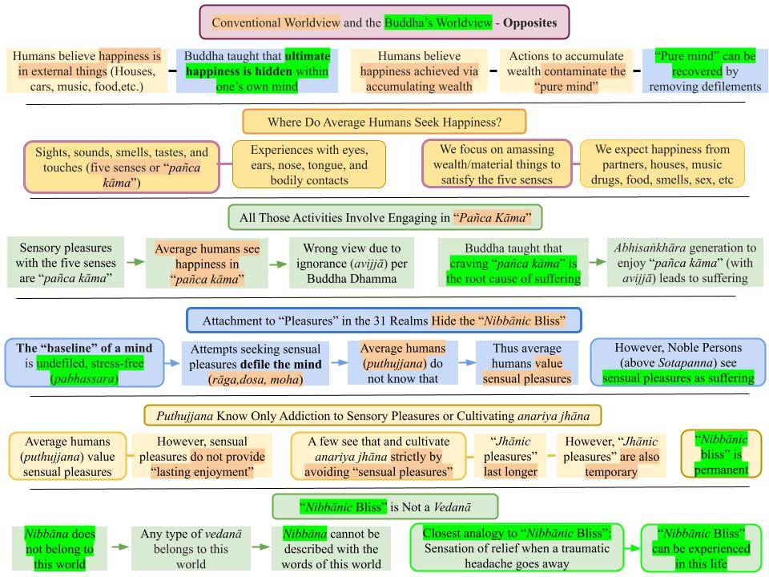

True happiness is the complete absence of suffering, per the Buddha. In contrast, people seek to maximize their sensory experiences, but the Buddha showed that such efforts only lead to suffering in the end.
July 29, 2023; revised August 9, 2023 (#7)

Download/Print: "B. Conventional Versus Buddha's Worldview."
Average Humans (Puthujjana) and Noble Persons (Ariya)
1. Average humans (puthujjana) are those who have not heard (or heard but not understood) the teachings of the Buddha.
- The eight types of Noble Persons (Ariya) are those who have understood the teachings of the Buddha (Four Noble Truths/Paṭicca Samuppāda/Tilakkhana) at various levels.
- The worldviews of the Ariya are the exact opposite of those of the puthujjana.
- One becomes a Sotapanna Anugāmi (first stage of Ariya) by comprehending the worldview of the Buddha.
Exactly Opposite Worldviews
2. A puthujjana believes that one's happiness grows with the accumulation of external things that provide sensory pleasures; the Buddha referred to sensory pleasures at various levels in various ways: sukha/somanassa vedanā, kāma assāda, sāmisa sukha, nirāmisa sukha, etc.
- Sensory pleasures are highest in the kāma loka, where five senses (eyes, ears, nose. tongue, and the body) can bring "pañca kāma" ("pañca" means "five" and "kāma" means "sensory pleasure.") The human realm belongs to kāma loka.
- However, the Buddha taught that true and ultimate happiness (complete absence of suffering) lies HIDDEN in one's own mind. That is the mind DEVOID OF rāga, dosa, moha. It is the "pabhassara citta," or a mind with "undefiled thoughts," as explained below.
- Thoughts (or citta) of a puthujjana are contaminated with rāga, dosa, and moha. That means the natural "suffering-free mind" gets covered further by the actions of a puthujjana trying to maximize sensual pleasures.
Puthujjana Are Only Aware of "Sāmisa Vedanā" Due to "Pañca Kāma"
3. We humans generate pleasant (sukha/somanassa), stressful (dukha/domanassa), and neutral (adukhhamasukha) vedanā based on our experiences with the five senses (eyes, ears, nose. tongue, and the body.)
- Puthujjana would like to maximize the sukha/somanassa vedanā and minimize the dukha/domanassa vedanā. Most puthujjana are not aware of any other types of vedanā.
- Therefore, whenever they encounter dukha/domanassa vedanā, they try to overcome them by engaging in activities that provide sukha/somanassa vedanā.
- For example, when depressed, many resort to consuming alcohol or taking drugs, assuming that is the only way to get rid of that depression. When getting depressed about not having enough sex, some resort to rape. The "solution" is always associated with another sensory input.
4. Therefore, puthujjana believe that happiness is in the external things that we experience with the five senses: rupa (things we see), sadda (sounds we hear), gandha (smells), rasa (food), and phottabba (bodily touches.)
- They try accumulating external things that seem to provide sukha/somanassa vedanā. Those things (houses, cars, music, fragrances, tasty food, sexual pleasure) cost money. Thus, considerable effort is undertaken to acquire material wealth.
- Wealth accumulation may lead to immoral deeds and keep one trapped in the kāma loka (apāyās, the human realm, and the six Deva realms). Kāma loka is where all five senses are active. In the higher Brahma lokās, three close contacts of gandha (smells), rasa (taste), and phottabba (bodily touches) are absent.
- Kāma loka, with the five types of "sensual pleasures" ("pañca kāma"), is where "kāma" is optimum and one is furthest from Nibbāna.
Relatively Few Puthujjana Are Aware of "Nirāmisa Sukha"
5. Even before the Buddha, some ascetics realized that "pañca kāma" leads to "net suffering" even though they provide immediate sukha/somanassa vedanā.
- For example, a depressed person may take drugs and "get high." However, taking drugs will lead to dangerous health issues. With time, higher doses of drugs will be needed to overcome depression, and that will accelerate the downward spiral in health. It is pretty common to hear about "deaths due to drug overdose" these days.
- Some ancient yogis (even before the Buddha) realized such "bad consequences" of "kāma assāda." Their solution was to hide in deep forests (away from sensual temptations) and cultivate "anariya jhāna." That involved distracting the mind from sensual thoughts by focusing it on "neutral objects" like clay balls or fires; that is "kasina meditation." A popular version of that is "breath meditation," where the mind focuses on the breath.
- Such efforts can lead to "jhānās," which are mental states that transcend the "kāma loka" on a temporary basis by suppressing "kāma rāga" or the "desires for sensual pleasures." While that will lead to a birth in a Brahma loka after death, one's future rebirth in apāyās is not avoided; see "Elephant in the Room 2 – Jhāna and Kasina."
- To be free of the rebirths in the apāyās, one must first remove the wrong worldview that "pleasures are inherent in external objects"; see #1 above.
Worldview of a Noble Person (Ariya)
6. The Buddha taught that the "natural state of mind" is free of defilements of rāga, dosa, and moha. Another way to say that is "only pabhassara citta" can arise in such a purified mind.
First, what is meant by “pabhassara“?
- The word comes from three sounds at the root: “pa” means again and again, “bha” is related to” bhava;“ and “sara” or “chara” means “to engage/participate” (“සැරිසැරීම” in Sinhala.) Thus, a “pabhasara citta” with only one “s” in the word (NOT pabhassara) is a contaminated citta that will lead to the saṁsāric journey or the rebirth process.
- The opposite of “pabha sara” is “pabha assara,” where “assara” means “not take part in.” It rhymes with “pabhassara.“
- Thus, someone who cleansed the mind to generate “pabhassara citta” is not liable to be reborn among the 31 realms, i.e., an Arahant generates “pabhassara citta.” See "Pabhassara Citta, Radiant Mind, and Bhavaṅga."
- This is why I say that Pāli is a phonetic language. Meanings come based on sounds. I have given many examples throughout the website.
Pabhassara Citta (Defilement-Free "Mind")
7. The "pabhassara citta" is succinctly described in two verses (#51 and #52) of "Accharāsaṅghātavagga" of Anguttara Nikaya.
- There, #51 states "Pabhassaramidaṁ (Pabhassaraṁ idaṁ) bhikkhave, cittaṁ. Tañca kho āgantukehi upakkilesehi upakkiliṭṭhaṁ. Taṁ assutavā puthujjano yathābhūtaṁ nappajānāti. Tasmā ‘assutavato puthujjanassa cittabhāvanā natthī’ti vadāmī”ti." meaning, "Bhikkhus, the mind is (inherently) without defilements and thus is not conducive to rebirth. But it is (normally) corrupted by the defilements. An ignorant ordinary person (puthujjano) does not truly understand that. So I don't teach meditation (citta bhāvanā) to an ignorant ordinary person."
- Then #52 states "Pabhassaramidaṁ, bhikkhave, cittaṁ. Tañca kho āgantukehi upakkilesehi vippamuttaṁ. Taṁ sutavā ariyasāvako yathābhūtaṁ pajānāti. Tasmā ‘sutavato ariyasāvakassa cittabhāvanā atthī’ti vadāmī”ti." meaning "Bhikkhus, the mind is (inherently) without defilements and thus is not conducive to rebirth. A mind can be freed from defilements. A learned Noble Disciple (sutavā ariyasāvako) truly understands that. So I teach meditation (citta bhāvanā) to a Noble Desciple."
- The baseline "pure mind" generates only pabhassara cittās. However, it remains hidden under layers of defilement. The critical point is that it is possible to "peel off those layers" and recover the "pure mind." We will discuss that in the next several posts. See posts under the "Recovering the Suffering-Free Pure Mind" section of "Buddhism - In Charts."
Attaining Nibbāna (Arahanthood) Involves Uncovering the Hidden "Pure Mind"
8. Therefore, the "suffering-free" state of mind is within us all. It has been thoroughly covered with many layers of defilements in our long saṁsāric journey. All we need to do is to uncover that "pure mind."
- Until that is understood, one would be an "assutavā puthujjano" who has not yet grasped the Buddha's worldview.
- Once one "sees" (with wisdom) that what we need to do is NOT to change the external world but to cleanse our own mind, it will become much easier to grasp what Nibbāna is. That is a paradigm change in the worldview.
9. In Paṭicca Samuppāda, one meaning of avijjā is not to understand the above. Thus, a puthujjana would strive to acquire wealth by engaging in abhisaṅkhāra (“avijjā paccayā saṅkhāra") and seeking sensory pleasures. But such efforts ALWAYS lead to suffering: "..upādāna paccayā bhavō, bhava paccayā jāti, jāti paccayā jarā, marana, soka-paridēva-dukkha-dōmanassupāyasā sambhavan’ti.”
- Therefore, it is critical to understand the things we attach to (and generate abhisaṅkhāra based on such attachments) do not have the power to keep us attached to them.
- Instead, our "upside-down worldview" makes us think that external things have "attractive qualities" (kāma guṇa).
- As the Buddha stated in #7 above, one cannot truly meditate (and get to Nibbāna) without understanding that first.
Uncovering the "Pure Mind" (Pabhassara Citta) Is like Cleansing a Gem covered with Dirt
10. Even the most precious gem is indistinguishable from a regular stone if it is covered with many layers of dirt.
- We must start uncovering our "hidden gem" ("pure mind" that generates only pabhassara citta) by starting peeling off layers of dust that have been accumulated.
- The first (and the thickest) layer of dust covering our "hidden gem" is the wrong view that worldly things have inherently (intrinsic) attractive nature. This is also a version of "Sakkāya Diṭṭhi."
- Once that layer is removed, one can glimpse the hidden shiny gem. That is the Sotapanna Anugāmi stage of Nibbāna. After that, there is no turning away from Nibbāna because one has confirmation of the "hidden gem." Attaining this Sotapanna Anugāmi stage involves only UNDERSTANDING Buddha Dhamma ("dassanena pahātabbā.") Pahātabbā means "removal"; thus, "dassanena pahātabbā" means "removal with vision."
- The removal of the rest of the dirt requires Satipaṭṭhāna/Ānāpānasati Bhāvanā ("bhāvanāya pahātabbā" or "removal via formal meditation" as in "citta bhāvanā" in #7 above.)
True Happiness Is the Absence of Suffering
11. Have you noticed that there is no mention in the entire Tipitaka about Buddha teaching how to enhance the "sukha vedanā"? The "Nibbāna Sukha Sutta (AN 9.34)" explains that "Nibbāna sukha" is the "absence of any vedanā."
- The Buddha always talked about "eliminating dukha vedanā." He pointed out that dukha (with one k) or suffering can be eliminated. That is why the First Noble Truth is about "suffering that can be removed," i.e., "Dukkha Sacca." Here, dukkha (with two k's) (dukha + khaya) implies "dukha that can be can be eliminated (khaya.)
- He did not dispute that there are many types of sukha vedanā to be had in this world (experienced with the five senses.) These five means of enjoying sensual pleasures are "pañca kāma."
- But he pointed out that "pañca kāma" can only be experienced at the expense of giving up the "suffering-free Nibbāna" or the "pure mind" that generates only "pabhassara citta." A mind that enjoys "pañca kāma" is ALWAYS a "defiled mind."
- The word "kāma" comes from "kha + ama," where "kha" means to "stop or remove," and "ama" is another name for Nibbāna. The more kāma one enjoys, the further removed one is from Nibbāna, the complete absence of suffering.
- "Pañca kāma" means "five types of kāma" (experienced with the five physical senses) available in the 11 lower realms (four apāyās, the human realm, and the six Deva realms.) Since they provide the highest number of avenues for "sensual pleasures" (sāmisa sukha), those realms are said to be in "kāma loka" (where kāma predominates.)
12. I briefly discussed the "nirāmisa sukha" experienced by yogis who give up pañca kāma and cultivate anariya jhāna. Their mindset is the same as that of a Brahma. Pañca kāma (and associated sāmisa sukha) is absent in the Brahma realms.
- "Nirāmisa vedanā" means transcending the "sāmisa vedanā" or the "stronger vedanā." However, both belong to the world of 31 realms and keep one away from Nibbāna.
- There are two types of kāma (attachment to rupa and sadda) still present for the rupavacara Brahmās (or the yogis who experience jhāna.) But those rupās and saddās do not involve "close (olārika) contacts" like food, smell, or sex.
- Even those two types are absent for the arupavacara Brahmās (or the yogis who experience arupavacara samāpatti.) But they still have a trace of "vedanā" left, as explained in the "Nibbāna Sukha Sutta (AN 9.34)." Any vedanā is associated with the world of 31 realms.
13. Then, what is "Nibbāna sukha" or "Nibbānic bliss"?
- As explained in the "Nibbāna Sukha Sutta (AN 9.34)," the Nibbānic bliss is the absence of any vedanā (or even citta.) A citta cannot arise without the involvement of rupa, vedanā, saññā, saṅkhāra, and viññāna (five aggregates.) All five are absent in Nibbāna.
- The Nibbānic bliss can be experienced even in this life by an Arahant in nirodha samāpatti (or saññāvedayita nirodha.) However, any Arahant would experience sukha and dukha vedanā that come to the physical body if they are not in nirodha samāpatti.
- The closest analogy for the "Nibbāna sukha" or "Nibbānic bliss" is the following: Think of someone who has had a chronic headache from the time as a baby. That person has never experienced a moment without a headache. How would that person feel if that headache went away? That relief is not a vedanā but a "blissful experience" for that person. "Nibbānic bliss" is such a relief (which holds permanently, forever, for an Arahant after death.)
- Nibbānic bliss starts with a trace at the Sotapanna Anugāmi stage and grows as one makes progress on the Noble Path. After the death of the Arahant, there will not be even a trace of suffering left.